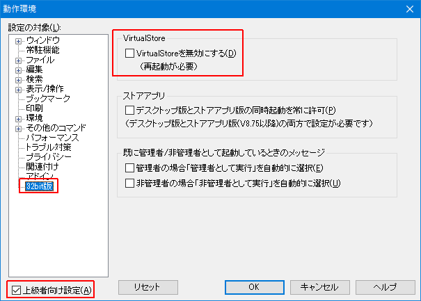
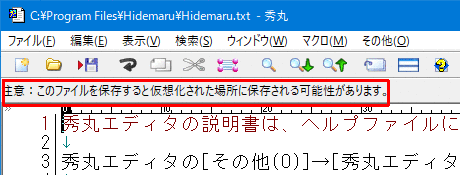

- ファイルを秀丸エディタで編集したのに、メモ帳など他のアプリケーションで確認しても編集した内容が反映されていないのですが？

以降の内容は、Windows Vista以降のOSで、ユーザーアカウント制御（UAC）が有効になっている場合の内容になります。
Windowsの「VirtualStore」という機能です。
Windows Vist以降、"C:\Program Files"や、Windowsのシステムフォルダ等、「保護されたフォルダ」に書き込むには、「管理者権限」が必要です。
Windows Vistaより前のWindowsでは、そのような制限がなかったため、対応していないソフトで、「保護されたフォルダ」のファイルを書き換えようとしても、エラーになったり、最悪の場合アプリケーションがクラッシュする事もあります。その為、過去との互換性を重視し、 "Windows Vista以降に対応していないソフト"で「保護されたフォルダ」のファイルを書き換えた場合、実際のファイルを書き換えるのではなく、別の場所にファイルを作成し、そのファイルを書き換えるような動作になってます。
つまり、"Windows Vista以降に対応していないソフト"側から見ると、「保護されたフォルダ」のファイルを書き換えたように見えるが、実際は、Windowsが違う場所にすり替えているという状態です。
読み込み時も同様で、すり替えた場所にファイルが存在すれば、そちらのファイルを開く事になります。
「保護されたフォルダ」のファイルを見た場合、- "Windows Vista以降に対応していないソフト"は、Windowsが違う場所にすり替えた場所のファイル
- "Windows Vista以降に対応したソフト"は、実際のファイル
という別のファイルを開く事になるので、表示される内容が違ってしまいます。
Windowsがすり替えた場所 は、「
%USERPROFILE%\AppData\local\VirtualStore」 になります。
(デフォルトでは、「C:\Users\ログオン名\AppData\Local\VirtualStore」 )秀丸エディタ 32bit版は、初期状態では、"Windows Vista以降に対応していないソフト"に分類されていますが、設定により"Windows Vistaに対応したソフト"に切り替える事が可能です。(32bitのみ、64bit版秀丸エディタにはない)

切り替えた場合は、「保護されたフォルダ」内のファイル編集・保存するに、管理者に昇格する必要があります。「管理者に昇格」できない場合は、編集は可能ですが、上書き保存する事はできません。
秀丸エディタ Ver.8.79以降の場合、「保護されたフォルダ」内のファイル開いている場合、エディタ画面上部に警告が表示されます。 (VirtualStoreが有効だと表示されますが、無効にすれば表示されない)
